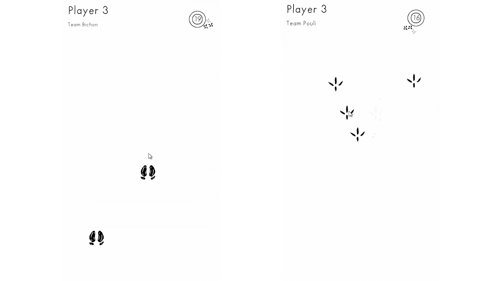

Architecture du projet
Durant ce projet, nous avons créé une architecture permettant de construire les différentes scènes de l’histoire. Celle-ci se découpe en séquences, avec plusieurs types de séquences possibles. Une scène peut parfois être composée de plusieurs séquences différentes : séquence de mini-jeu, séquence d’animation ou séquence de dialogue.
Mini-Jeu
Pendant ce projet, j’ai développé l’un des mini-jeux que les joueurs doivent réaliser pour aider Pouli. Dans ce mini-jeu, des pattes d’animaux apparaissent à l’écran. Lorsque le joueur appuie dessus, il gagne des points qui sont également ajoutés au score de son équipe. Comme tous les autres mini-jeux, celui-ci a été conçu pour être joué en multijoueur. J’ai donc dû mettre en place un système permettant de répartir les joueurs en deux équipes.
Etudes des solutions techniques
Pendant ce projet, lorsque le client nous a apporté des précisions sur les objectifs de l’expérience, j’ai réalisé, avec les autres développeurs, des études sur les différentes solutions techniques que nous pouvions apporter au projet et sur ce qu’il était possible de réaliser dans le temps imparti.
Lead suppléant du projet
De plus, j’ai occupé tout au long du projet le rôle de lead projet suppléant, afin de remplacer le lead lors de ses absences. Cela m’a permis d’avoir une vision plus globale de la gestion d’un projet, notamment en participant aux échanges avec les directeurs.